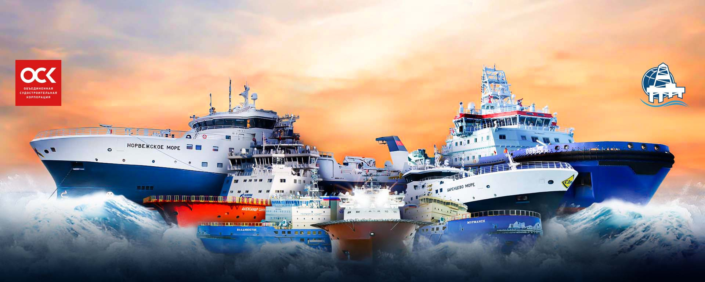

Ключевые фигуры:Александр Сергеевич Соловьев (генеральный директор)
Основные направления деятельности: строительство и ремонт судов, разработка новых технологий.
История
Выборгская судостроительная промышленность имеет давнюю историю. В числе предшественников предприятия — Выборгская верфь и Выборгский механический завод.Строительство современного завода было начато в 1947 году, 12 ноября 1948 года предприятие было введено в частичную эксплуатацию как завод № 870 Министерства судостроительной промышленности. Верфь начала производственную деятельность с выпуска несамоходных барж проекта СБ-150. Производство началось в 1949 году с восьми несамоходных барж.
К началу 1950 года вошли в строй корпусный цех, несколько стапелей и ряд других сооружений. В 1953 году сданы первые самоходные баржи. Во второй половине 1950-х годов строятся несколько десантных кораблей проектов 188 и 189. [5][6][7] К началу 1960-х годов верфь была достроена. В 1965 году получает название Выборгский судостроительный завод. С начала 1960-х и до начала 80-х годов верфь серийно изготавливает лесовозы проектов 596, 596М, 1574, 1590П, сухогрузы проекта 1586, контейнеровозы проектов 1590К и 15903, танкеры проектов 577 и 1541 а также ряд специальных судов.
С конца 1970-х годов верфь начинает выпуск плавучих буровых платформ: нефтяных платформ, плавучих установок для добычи, хранения и отгрузки нефти.
В середине 1990-х годов изготовлена серия лесовозов проекта 15750. В конце 1990-х годов выполнил модернизацию буровой платформы для работы в качестве плавучего космодрома «Морской старт». Морская нефтедобывающая платформа «Odyssey», ставшая впоследствии стартовой платформой для проекта «Морской старт», дважды проходила переоборудование на заводе.
2000-е
В начале 2000-х годов заводом построены серия траулеров, судов снабжения морских платформ и танкеров. Выполняется часть работ по строительству полупогружных буровых платформ «Полярная звезда» и «Северное сияние». В 2000—2002 годах на Выборгском судостроительном заводе для норвежской нефтяной компании Moss Maritime была построена полупогружная нефтяная платформа — сейчас на её основе работает SBX (англ. Sea-Based X-band radar, радар X-диапазона морского базирования), буксируемая надводная радиолокационная установка, предназначенная для размещения в открытом океане. Создана и эксплуатируется в рамках программы ПРО Министерства Обороны США, входит в состав системы GMD. На 2014 год существует в единственном экземпляре (SBX-1, регистрационный номер ММО 8765412), который дислоцируется в Тихом океане.
16 августа 2007 года заместитель председателя правления «Газпрома» (заказчика конкурса) Валерий Голубев сообщил, что завод победил в конкурсе на строительство буровых установок для разработки Штокмановского месторождения. Приблизительная стоимость проекта: 59 млрд руб. В связи с этим ВСЗ лоббировал строительство крупнотоннажной верфи близ Приморска в Финском заливе. Верфь должна была выпускать танкеры, газовозы и другие плавсредства для освоения арктических месторождений. Однако освоение Штокмановского месторождения было заморожено. Проект суперверфи не перешёл в стадию реализации. Были построены нижние основания для буровых установок «Северное сияние» и «Полярная звезда», которые должны быть использованы при освоении дальневосточных проектов (Сахалинский шельф)
2010-е
В 2012—2015 годах верфь строит 3 ледокола проекта 21900М, для чего понадобилось построить плавучий док.
В 2015—2018 годах по заказу ООО «Газпромнефть Новый порт» построены два ледокола по проекту Aker ARC 130Aмощностью 22 МВт. Главными задачами судов будет ледокольная проводка танкеров, помощь при проведении швартовных и погрузочных работ, спасательных операций, буксировки судов, пожаротушения, участия в операциях по ликвидации разливов нефти мощностью 22 МВт. Предназначены для работы на арктическом терминале Новопортовского месторождения, расположенном на западе Обской губы на полуострове Ямал. Суда построены под ледовый класс Icebreaker8, обеспечивают ледопроходимость до 2 метров и значительную маневренность при сравнительно небольшой осадке. Обводы корпуса необычны для традиционных ледокольных схем. Это судно не давит лед, а разрезает и фрезерует его. На судне установлены две азимутальные колонки в корме и одна в носу, за счёт чего обеспечивается более чистый канал и более чистая вода под самим ледоколом, что в свою очередь, увеличивает ледопроходимость.
В 2015—2019 годах построен ледокол «Обь» по проекту Aker Arc 124, его мощность позволит производить во льду толщиной 1,5 метров на скорости 2 узла и развивать скорость 4 узла в битом льду толщиной до 5 метров